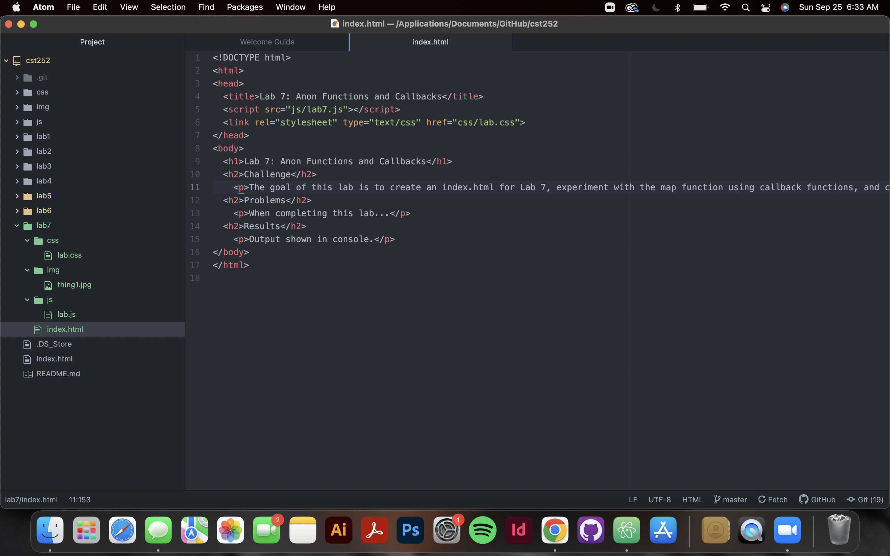

The goal of this lab is to create an index.html for Lab 7, experiment with the map function using callback functions, and create a Javascript file.
Completing this lab was easier than completing labs prior. I did not run into any issues when using callback functions.
The results of Task 1 (creatng an index.html for lab 7) can be seen on this page. The results of the Javascript creation and callback fucntions can be shown in the console andbscreenshots.
Screenshot of the new index.html file in Atom
Screenshot of the console after experimenting with the map function using callback functions
Screenshot of cst252/lab8/js/lab.js in Atom
Screenshot of cst252/lab8/js/lab.js in the console